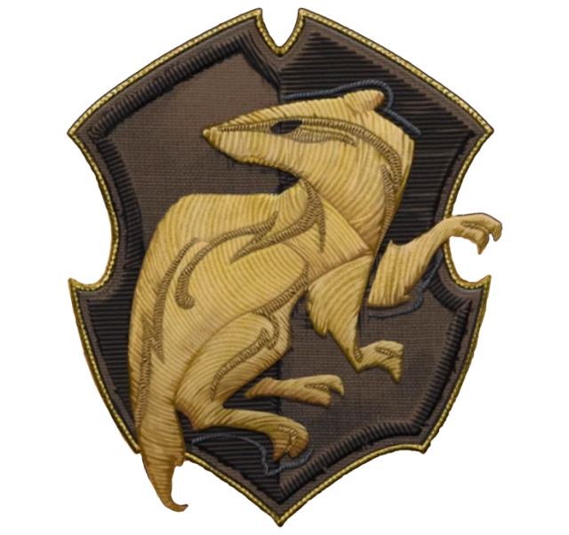
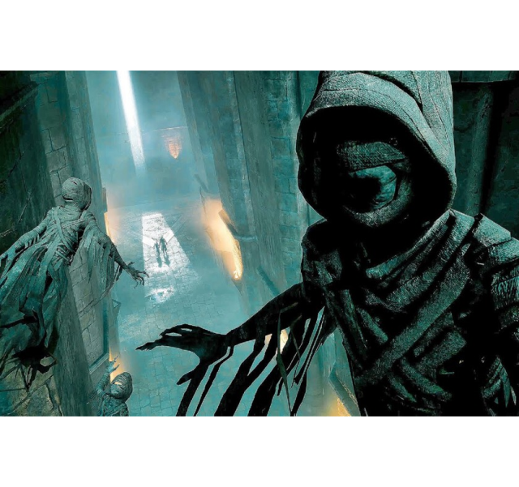

HUFFLEPUFF
Casa Hufflepuff
Hufflepuff, una de las cuatro casas de la legendaria escuela de magia Hogwarts, es reconocida por su dedicación, lealtad y sentido de la igualdad. Fundada por Helga Hufflepuff, esta casa valora la honestidad y la laboriosidad, y acoge a aquellos estudiantes que muestran un espíritu de trabajo en equipo y una disposición para ayudar a los demás. Los alumnos de Hufflepuff son conocidos por su amabilidad y su capacidad para ver lo mejor en los demás. Son individuos compasivos y solidarios, dispuestos a tender una mano a aquellos que lo necesitan y a defender los valores de la justicia y la igualdad. Además de su dedicación al trabajo arduo, los Hufflepuff también son reconocidos por su lealtad inquebrantable hacia sus amigos y seres queridos. Son compañeros confiables y leales, siempre dispuestos a brindar apoyo y aliento a quienes los rodean. En Hufflepuff, se valora la diversidad y se celebra la individualidad de cada estudiante. Los alumnos son alentados a trabajar juntos en armonía, reconociendo que cada uno tiene talentos y habilidades únicas que contribuyen al bienestar de la comunidad. En resumen, los Hufflepuff son estudiantes humildes y trabajadores, cuyo compromiso con la bondad y la solidaridad los convierte en un pilar fundamental de la comunidad de Hogwarts.
Sala común de Hufflepuff
La sala común de Hufflepuff, un lugar de calidez y hospitalidad, se encuentra en el pasillo que lleva a las cocinas de Hogwarts. Para acceder a ella, los estudiantes deben encontrar un gran barril que solo se abrirá para aquellos que pertenecen a Hufflepuff. Es importante tener en cuenta que el barril reaccionará de forma desagradable si un estudiante de otra casa intenta ingresar, lanzándole un líquido a los ojos como una medida de protección. Una vez dentro, te encontrarás inmerso en un ambiente acogedor y lleno de vida. La sala está decorada con plantas que adornan cada rincón, iluminadas por la suave luz del sol que se filtra a través de las ventanas. Los muebles y lámparas en tonos amarillos añaden un toque de calidez y luminosidad al espacio, creando un ambiente acogedor y reconfortante para todos los que lo visitan. Es un lugar donde la amistad y la lealtad florecen, donde los estudiantes de Hufflepuff pueden reunirse para estudiar, socializar y relajarse después de un largo día en las aulas de Hogwarts. Es un verdadero refugio para aquellos que valoran la amistad, la bondad y el trabajo en equipo, y donde siempre serán recibidos con los brazos abiertos por sus compañeros de casa.
Jugabilidad
Únete a Hufflepuff en Hogwarts Legacy y sumérgete en una aventura llena de bondad, lealtad y amistad sincera. Como miembro de Hufflepuff, tendrás la oportunidad de forjar vínculos sólidos con tus compañeros de casa y explorar el mundo mágico con tu amiga Poppy Sweeting, cuya bondad y amor por los animales iluminarán tu viaje. Luciendo el uniforme amarillo con detalles de tejones, mostrarás tu orgullo por pertenecer a Hufflepuff y representarás los valores de lealtad y trabajo en equipo que caracterizan a esta noble casa. Además, mientras exploras el mundo mágico, tendrás más probabilidades de encontrar prendas de vestir de color amarillo que reflejen tu lealtad a Hufflepuff y al tejón, el emblema de la casa. La misión principal de Hufflepuff es una emocionante aventura que te llevará a conocer a un ex ministro de magia y luego a visitar la prisión de Azkaban para intentar resolver un misterioso asesinato. De todas las misiones especiales, la de Hufflepuff es la mejor de todas.
PERSONAJES
Poppy Sweeting
Arthur Plummly